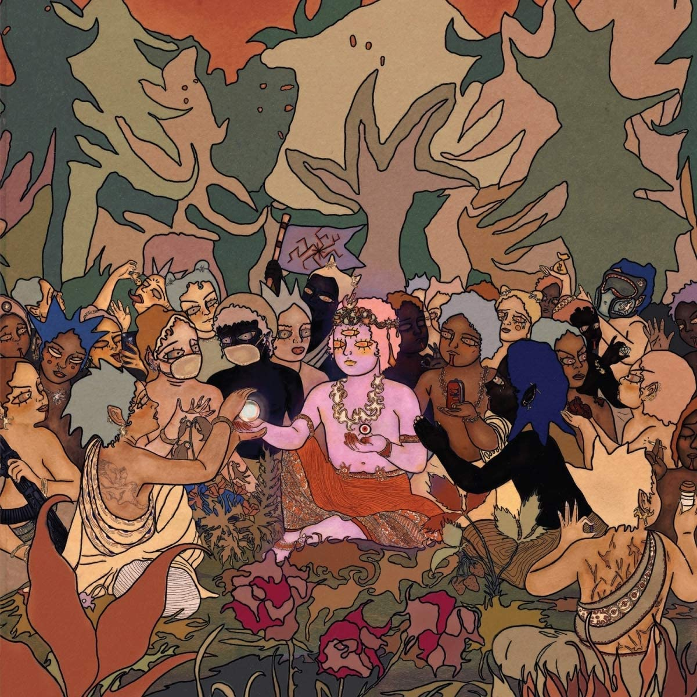
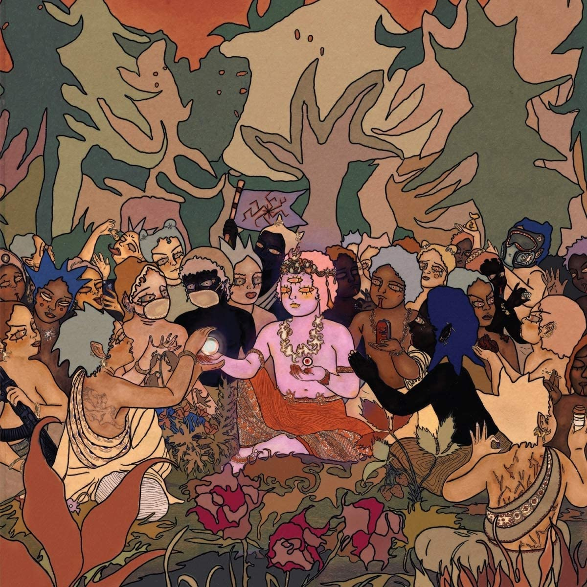

Bring Me The Horizon (sau BMTH pe scurt) sunt o trupa rock din Marea Britanie, formata in Sheffield in 2004. Grupul consista din cantaretul Oliver Skyes, chitarista Lee Malia, basistul Matt Kean, tobosarul Matt Nicholls si Jordan Fish la clape. Acestia au avut inca un chitarist, Curtis Ward, care, din pacate, i-a parasit in 2009 din cauza diferentelor dintre ei.
Au debutat cu albumul Count Your Blessings in 2006. Cand s-a lansat, a impartit ascultatorii in 2 grupe: cei care il detestau si cei care il iubeau. Insa abia cu al treilea album, There Is a Hell Believe Me I've Seen It. There Is a Heaven Let's Keep It a Secret. din 2010, au reusit sa devina faimosi international.
Hexagrama alaturata este un logo folosit the ei, care provine din factiunea Inferno din Heroes of Might and Magic V.
Cealalta poza este cover-ul albumului Post Human: Survival Horror.
I-am descoperit prin albumul Post Human: Survival Horror (30 Octombrie, 2020), mai exact prin melodia Parasite Eve (2020), care este bazata pe jocul video cu acelasi nume din 1998. Alte cantece de notat din album ar fi Dear Diary, (2020), Kingslayer (2020), Obey (2020), Ludens (2019), 1x1 (2020), Teardrops(2020), Itch For The Cure (When Will We Be Free)(2020).

 

Videoclipurile alaturate sunt melodiile precizate anterior, mai exact Parasite Eve, Dear Diary,, Kingslayer si 1x1, linkurile fiind luate de pe canalul lor oficial de YouTube, care in prezent are peste 3.47 milioane de abonati si peste un miliard de vizionari totale, el fiind creat in 2012.